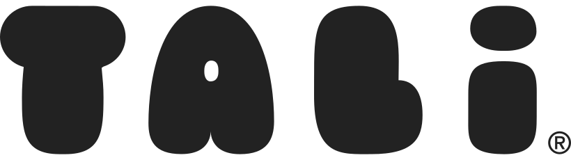

Marketing Operations & Automation Specialist
I help marketing teams grow through scalable operations, automation strategy, and data-driven processes — from lead scoring and lifecycle programs to CRM integration and attribution across global markets.
About Me
I'm a Melbourne-based Marketing Operations Specialist who has supported global stakeholders across APJ, North America, and Europe. My focus is on building scalable marketing infrastructure — lead scoring models, automation workflows, attribution frameworks, and data governance — that connects marketing effort to measurable business outcomes.
With a background spanning healthtech, SaaS, construction, and fintech, I've built a broad toolkit for solving marketing operations challenges across various industries. I hold a Bachelor of Communications (Major in Public Relations, Minor in Media Studies) from Massey University, and I'm passionate about how AI and automation are reshaping the way we build and optimise campaigns.
What I Do
End-to-end marketing ops strategy — process design, platform governance, data integrity, and operational consistency across global teams.
Building and optimising multi-channel automation campaigns and lifecycle journeys across the full customer lifecycle using platforms like Marketo, HubSpot, and Pardot.
Designing lead scoring and decay models that improve sales alignment, lead quality, and funnel conversion at scale — maintaining strong MQL-to-SQL conversion rates.
Supporting demand generation and GTM execution across digital, email, paid social, SEM, SEO, and lifecycle programs for global stakeholders.
Managing and integrating platforms like Salesforce, Marketo, HubSpot, Pardot, and WordPress to create a unified, high-performing marketing tech stack.
Exploring and implementing AI-driven approaches to campaign optimisation, segmentation, and marketing process efficiency to drive scalable growth.
Experience
Owning marketing ops strategy for global demand gen and GTM execution across APJ, North America, and Europe. Designed and implemented lead scoring and decay models, improved funnel efficiency, and drove governance across platforms. Partnered with Marketing, Sales, and RevOps leadership to identify funnel inefficiencies and implement scalable process improvements.
Led the Retirement Living marketing team in planning, building, and optimising multi-channel automation campaigns across the full customer lifecycle. Built campaigns to acquire, retain, reactivate, and engage customers using data-driven segmentation and audience refinement.
Managed end-to-end campaign execution across digital, email, SMS, and events. Managed Marketing Automation Platform and CMS automations, coordinating digital nurture campaigns and overseeing all APAC marketing from Dec 2021 to May 2022.

Supported digital and traditional marketing campaigns in healthtech. Managed social media, CRM, CMS, events, and marketing reporting. Coordinated and managed a state-wide television and digital marketing campaign that drove the highest month in sales for 2019/2020.
Toolkit
Get in Touch
Whether you're looking to chat about marketing operations, automation strategy, or a potential opportunity — I'd love to chat or grab a coffee.